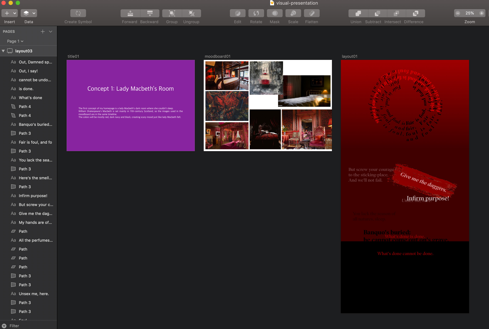
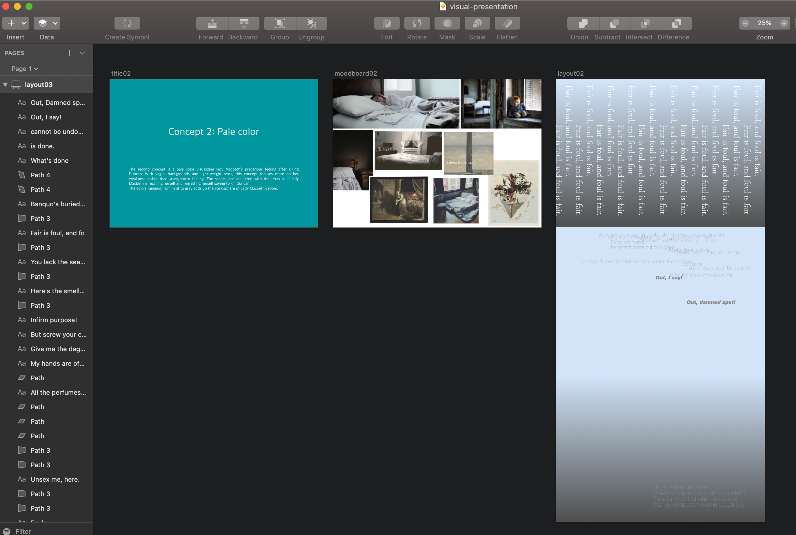
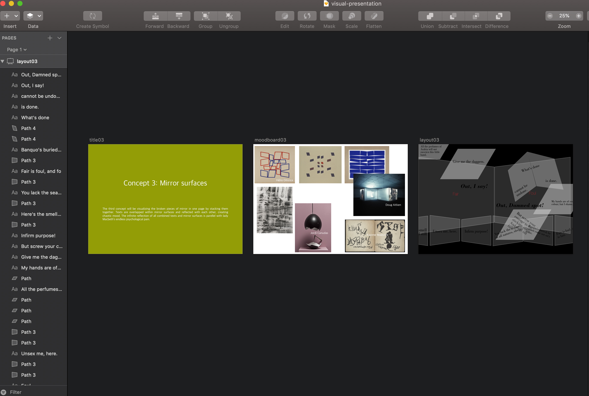
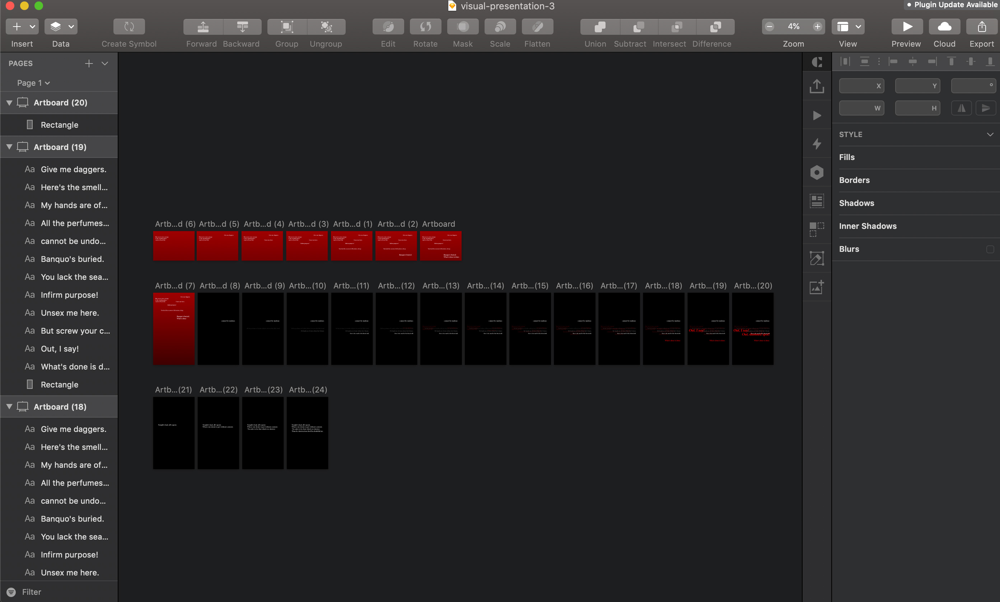

Project direction by professor: By definition, maxims are a short, pithy statement expressing a general truth or rule of conduct. For this project, collect a set of phrases from an existing source. Examples: Email subject lines, news headlines, dates, fortune cookie messages. Create a type-only website that displays these maxims in a compelling way. Consider the content of your maxims. What are they about and where are they coming from? How does the content change based on the hierarchy of your design and the way you’re breaking it up? You should have at least 15 different maxims on your website and your website should guide the user with control and interest.
Using only texts, I created a scene inspired by Lady Macbeth's sleepwalking scene. I visualized her fragile and guilty emotion of herself saying to her husband to kill Duncan. At first, she seemed she doesn't feel any guilty emotion about it but she can't get out of herself being overwhelmed as time goes by. Her emotional status is visually-dramatized in chaotic animations with the use of jQuery animation effects.
HTML, CSS, jQuery
3 weeks including getting feedbacks from professor and critique in class
(February 5th ~ February 26th, 2019)
1. Visual Presentation and Confirming the Concept
Before executing the website, I came up with 3 different versions of visual presentation -- 1: Lady Macbeth's room, 2: Pale color, 3: Mirror surfaces -- and discuss them in the class to set the visual concept. Each concept is presented with a brief description, mood board, and preview of the website using Sketch. Professor Nika advised me that the first and second version is more focusing on colors, whereas the third version is showing visually-interesting forms. She suggested me to make it more stronger by upgrading the navigation and layouts in the first version(the quotes below the circle looked less strong) and combine colors and layouts in the third version together. Also to place only texts that are kind of similar to mirror shapes, but not literally showing the shapes like shown in the third presentation.
2. Prototyping with Sketch
Based on critiques from classmates in the class, I set the first concept 'Lady Macbeth's Room' to maximize creepy and scary atmosphere of the scene. The fourth image above shows the final prototyping of the website. In the final prototyping, the scenes are classified in 3 phases. The first scene showing confidence of Lady Macbeth, the second scene showing her fragility and guilty, and lastly the third scene showing her regret.
3. Execution with HTML, CSS, jQuery
In the first draft, the text animation was all linear. Professor Nika suggested me to change the navigation in Black background, which makes more sense to visualize Lady Macbeth's chaotic emotional status. In the final, I randomly set animation in Scene #2 by using jQuery.